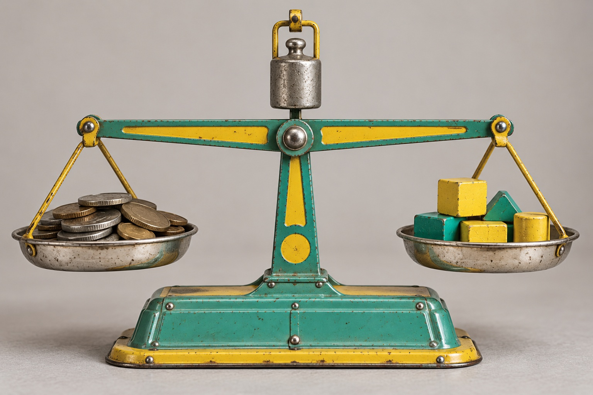

Ein Annuitätendarlehen ist ein Darlehen mit gleichbleibender Monatsrate, der Annuität. Die Rate besteht aus Zins und Tilgung. Weil die Zinsen immer nur auf die noch offene Restschuld berechnet werden, sinkt der Zinsanteil mit jeder Rate, und der Tilgungsanteil steigt. Die gewählte anfängliche Tilgung bestimmt, wie lange Sie zahlen und wie viel Zinsen Sie insgesamt zahlen.
Das Wichtigste in Kürze
- Jahresrate = Darlehen × (Sollzins + anfängliche Tilgung). Die Rate bleibt gleich, der Zinsanteil sinkt mit jeder Rate.
- Bei 300.000 € und 4 % Zins dauert die Tilgung mit 1 % über 40 Jahre, mit 3 % gut 21 Jahre.
- Für den Vergleich von Angeboten zählt der effektive Jahreszins.
Was in jeder Rate steckt
300.000 € Darlehen, Beispielzins 4 % über die ganze Laufzeit. Die Rate bleibt gleich, der Zinsanteil schrumpft. Tilgung wählen.
Beispielzins, keine aktuelle Kondition · Rechnung mit monatlicher Tilgung · Grafik: Fischer & Geserich
Wie funktioniert ein Annuitätendarlehen?

Die Monatsrate eines Annuitätendarlehens wird zu Beginn aus zwei Prozentsätzen festgelegt, dem Sollzins und der anfänglichen Tilgung.
Jahresrate = Darlehensbetrag × (Sollzins + anfängliche Tilgung)
Bei 300.000 Euro, 4 Prozent Zins und 2 Prozent Tilgung sind das 18.000 Euro im Jahr oder 1.500 Euro im Monat. Diese Rate bleibt über die gesamte Zinsbindung gleich.
In der ersten Rate entfallen 1.000 Euro auf Zinsen (300.000 × 4 % ÷ 12) und 500 Euro auf Tilgung. Die Restschuld sinkt damit auf 299.500 Euro. In der zweiten Rate werden die Zinsen schon auf diesen niedrigeren Betrag berechnet. Sie sind etwas geringer, und der Tilgungsanteil steigt um genau diese Differenz. Dieser Effekt wiederholt sich mit jeder Rate und beschleunigt sich über die Zeit.
Wie sich Zins und Tilgung verschieben
Am Anfang zahlen Sie vor allem Zinsen. Nach dem ersten Jahr haben Sie im Beispiel 18.000 Euro gezahlt, davon 11.889 Euro Zinsen und nur 6.111 Euro Tilgung. Nach 10 Jahren sind Zins- und Tilgungsanteil ungefähr gleich groß. Die 120. Rate besteht aus 757 Euro Zinsen und 743 Euro Tilgung. Die Restschuld beträgt dann noch 226.375 Euro.
Deshalb fühlt sich ein Annuitätendarlehen in den ersten Jahren zäh an. Die Tilgung kommt erst in der zweiten Hälfte der Laufzeit richtig in Fahrt.
Die anfängliche Tilgung entscheidet über die Laufzeit
Die wichtigste Stellschraube ist die anfängliche Tilgung. Ein Prozentpunkt mehr oder weniger verändert Laufzeit und Gesamtkosten erheblich. Beispiel mit 300.000 Euro Darlehen und einem Beispielzins von 4 Prozent, der zur Vereinfachung über die gesamte Laufzeit gleich bleibt:
| Anfängliche Tilgung | Monatsrate | Laufzeit bis schuldenfrei | Zinsen gesamt, rund |
|---|---|---|---|
| 1 % | 1.250 € | 40,3 Jahre | 304.500 € |
| 2 % | 1.500 € | 27,5 Jahre | 195.200 € |
| 3 % | 1.750 € | 21,2 Jahre | 145.600 € |
Mit 1 Prozent Tilgung zahlen Sie mehr Zinsen, als Sie sich geliehen haben, und sind erst nach über 40 Jahren schuldenfrei. Mit 3 Prozent sparen Sie gegenüber 1 Prozent rund 159.000 Euro Zinsen, bei einer um 500 Euro höheren Monatsrate.
Je höher der Zins, desto stärker wirkt die Tilgungshöhe. Bei niedrigen Zinsen tilgt sich ein Darlehen schon mit 2 Prozent vergleichsweise schnell. Bei Zinsen um 4 Prozent ist eine Tilgung von 1 Prozent für ein Darlehen, das abbezahlt werden soll, zu niedrig.
Sollzins und Effektivzins
In jedem Angebot stehen zwei Zinssätze. Der Sollzins ist der Zins, mit dem die Bank Ihre Zinsen berechnet. Der effektive Jahreszins enthält zusätzlich bestimmte Kosten des Darlehens und den Effekt der monatlichen Zahlweise. Er ist deshalb etwas höher und die richtige Zahl, um Angebote verschiedener Banken zu vergleichen. Für die Berechnung Ihrer Rate zählt der Sollzins.
Kapitalanleger und Eigennutzer tilgen unterschiedlich
Für Eigennutzer ist eine hohe Tilgung fast immer sinnvoll, sofern die Rate tragbar bleibt und eine Reserve übrig ist. Zinsen sind für sie reine Kosten.
Bei vermieteten Immobilien ist die Rechnung differenzierter. Die Zinsen mindern als Werbungskosten die Steuer, die Tilgung dagegen nicht. Eine hohe Tilgung belastet zudem den monatlichen Cashflow. Viele Anleger wählen deshalb eine niedrigere Tilgung und halten Liquidität für weitere Käufe. Das ist legitim, solange die Restschuld zum Ende der Zinsbindung tragbar bleibt und die Anschlussfinanzierung auch bei höherem Zins funktioniert.
Die Einschätzung von Fischer & Geserich
In vielen Finanzierungsgesprächen gilt die Tilgung als Nebensache, weil sie die Rate erhöht. Wir halten sie für eine der wichtigsten Entscheidungen der ganzen Finanzierung. Sie bestimmt, wie hoch die Restschuld zum Ende der Zinsbindung ist, und damit, wie verwundbar Sie bei der Anschlussfinanzierung sind.
Häufige Fragen
Was ist ein Annuitätendarlehen?
Ein Darlehen mit gleichbleibender Monatsrate, die aus Zins und Tilgung besteht. Weil die Zinsen nur auf die Restschuld berechnet werden, sinkt der Zinsanteil mit jeder Rate, und der Tilgungsanteil steigt entsprechend. Es ist die übliche Form der Baufinanzierung in Deutschland.
Wie berechnet man die Rate eines Annuitätendarlehens?
Jahresrate = Darlehensbetrag × (Sollzins + anfängliche Tilgung). Bei 300.000 Euro, 4 Prozent Zins und 2 Prozent Tilgung ergibt das 18.000 Euro im Jahr oder 1.500 Euro im Monat.
Wie hoch sollte die Tilgung sein?
Bei Zinsen um 4 Prozent sind mindestens 2 Prozent anfängliche Tilgung sinnvoll, damit das Darlehen in einem überschaubaren Zeitraum abbezahlt wird. Mit 2 Prozent dauert es im Beispiel 27,5 Jahre, mit 1 Prozent über 40 Jahre. Kapitalanleger wählen aus steuerlichen Gründen und für den Cashflow oft eine niedrigere Tilgung.
Was ist der Unterschied zwischen Sollzins und Effektivzins?
Der Sollzins ist der Zins, mit dem die Bank Ihre Zinsen berechnet. Der effektive Jahreszins enthält zusätzlich bestimmte Kosten und den Effekt der monatlichen Zahlweise und eignet sich deshalb zum Vergleich von Angeboten.
Die Bilder in diesem Beitrag wurden mit KI erstellt.
Der Beitrag dient der allgemeinen Information und ersetzt keine Rechts-, Steuer-, Finanzierungs- oder Anlageberatung. Zinssätze in Beispielrechnungen sind Beispielwerte, keine aktuellen Konditionen.